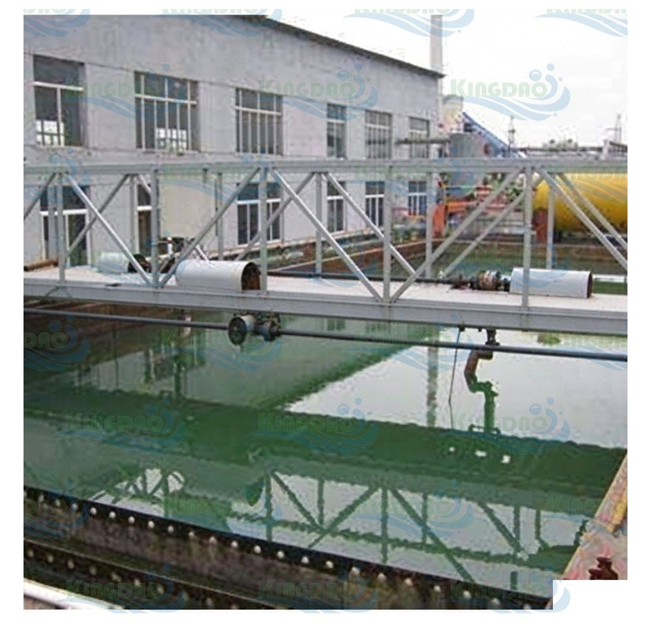
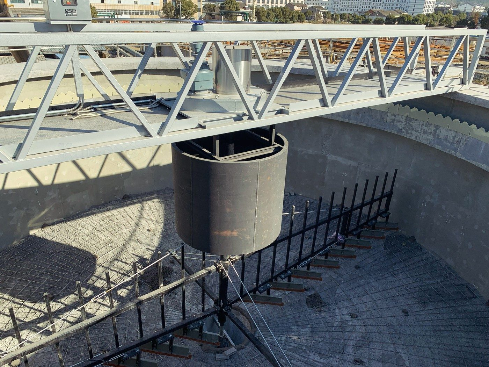

In short: Circular and rectangular tank sludge collection, matched to the tank geometry rather than forced into one design. Sludge and scum are collected in one pass where the tank requires it, with overload protection on the drive and corrosion-resistant wet-end materials.
A sludge scraper removes settled sludge from the floor of a sedimentation tank and drives it to the collection point, while a surface skimmer can remove floating material at the same time. Without reliable scraping, the sludge layer builds, goes anaerobic and the tank stops doing its job.
Both circular and rectangular configurations are available, with drive options matched to the tank size and the sludge volume.
A rake arm pushed radially leaves a ring of sludge at the tank wall. The ZQ(B)GN scraper is set so the blade travels a spiral path — every pass sweeps fresh floor and pushes toward the sludge hopper, so the tank does not silt up between desludging cycles.
| Configuration | Bridge | Typical tank | Drive | What it is for |
|---|---|---|---|---|
| ZQGN — full bridge | full diameter, two supports on the wall ring | large diameter tanks | higher drive power, twin drive optional | big secondary clarifiers where one arm cannot cover the floor in a reasonable time |
| ZQBN — half bridge | half diameter, one centre pivot + one wall carriage | small and medium tanks | single drive, economy | rectangular-to-round conversions, small works, package plants |
Same order as the tables above — the physical unit behind each specification.

The scraper is the one machine in a settlement tank that has to work every hour of every day without anyone watching it. Everything below is about keeping it running: the drive, the blade relief, and the material the bridge is made of.
How it works. The drive unit walks the bridge slowly around the tank wall. The scraper blades on the arm stay in close contact with the floor and push the settled sludge from the periphery toward the central hopper — a spiral path, not a radial push, so the sludge arrives at the centre instead of being left in a ring.
Scum removal in the same pass. A scum blade at the water line works with the scum baffle on the wall to guide floating material into the scum box. One rotation cleans the floor and the surface together.
What protects it. If a blade meets an obstacle it lifts, and the drive carries torque protection behind that — the machine stalls and recovers rather than shearing a shaft. This is the difference between a scraper that survives a rag or a brick and one that does not.
Where it saves money. The bridge is loaded so the running resistance is low, and the drive is a gearbox coupled directly to the wheel — fewer components, fewer failure points, and a noticeably lower power draw over a year of continuous rotation. Blade angle and path are set so the tank floor is left clean and the sludge arrives at the hopper at a lower water content, which the dewatering stage downstream then does not have to pay for.
Materials. The bridge is available in carbon steel, stainless steel or aluminium — the choice is a corrosion and budget decision, not a performance one. The electrical panel can be specified with run-time scheduling and a PLC interface for plant-wide SCADA.
This equipment is built to the process requirement rather than offered as a fixed catalogue of standard models — because the wrong tank volume, plate size or membrane area cannot be corrected later on site.
Flow rate, the medium and its concentration, the installation arrangement, the discharge standard, and the supply voltage and frequency.
A model selection with the dimensioned GA drawing, material specification, utility consumption and the price against that specific duty.
A published table invites selection by flow alone — which is how undersized equipment gets installed. We would rather size it with you once.
15–35 days from drawing approval, depending on the line and the material. Confirm with us before quoting your client.
Primary and secondary clarifiers · thickeners · industrial settling tanks
Flow, the medium, the installation and the discharge requirement — that is enough to select and quote.

By the tank geometry you already have. The two configurations are separate designs, not one machine stretched to fit; forcing the wrong one costs more in civil works than it saves in equipment.
Where the tank requires it, yes - sludge and scum are collected in the same pass rather than needing a second mechanism.
Overload protection on the drive, so a jam stalls the unit instead of destroying the gearbox or the scraper arms.
The blade angle is set so each revolution advances the sludge along the floor slope to the central hopper, where it is drawn off.
Yes - corrosion-resistant materials are selected where the tank contents are aggressive, rather than applying one grade everywhere.